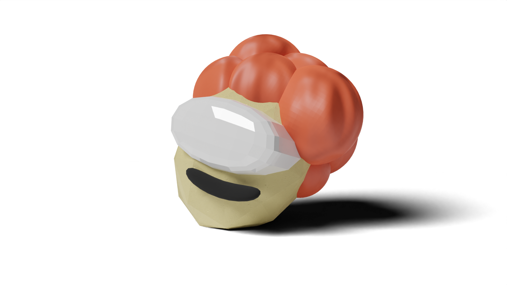
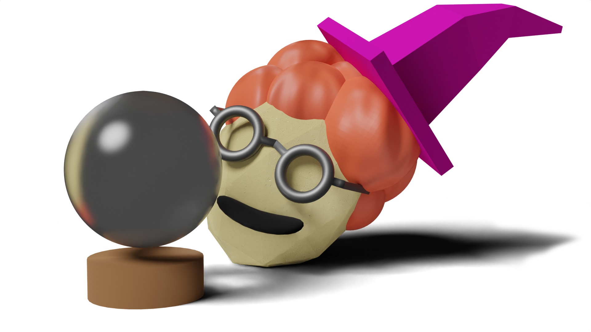
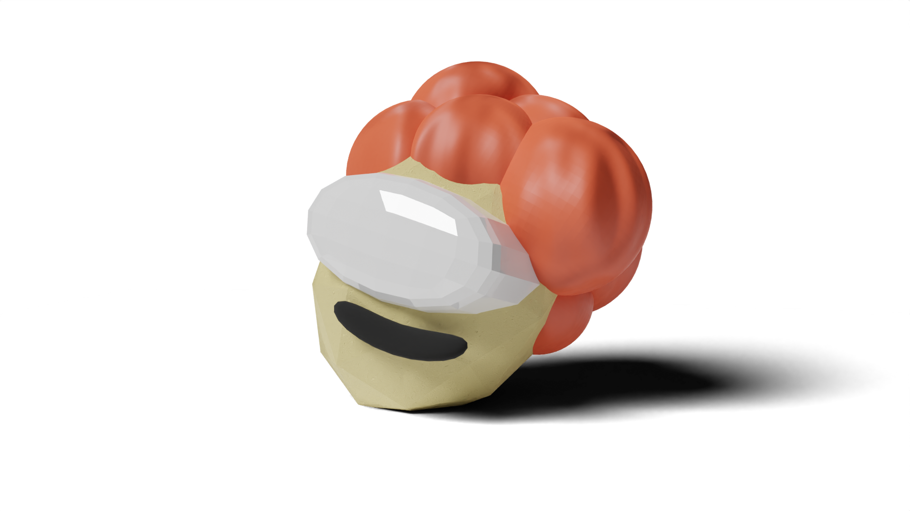
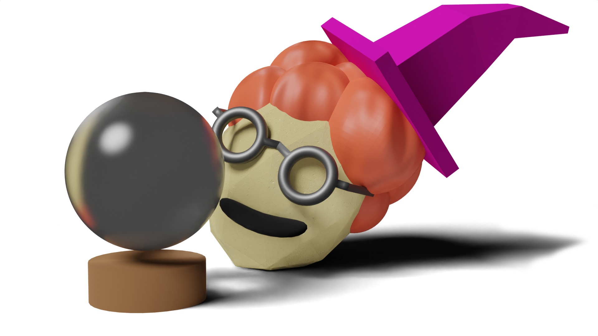
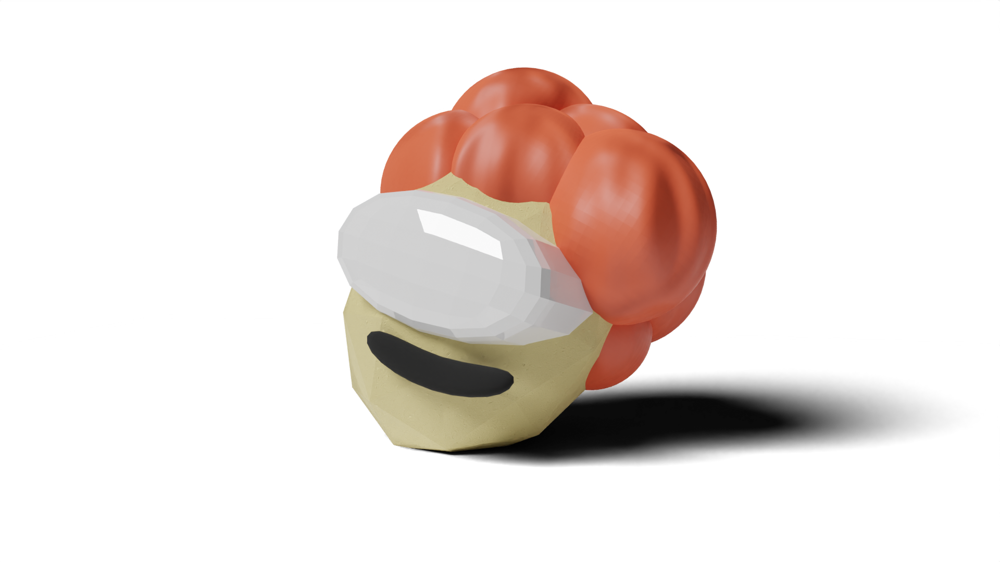
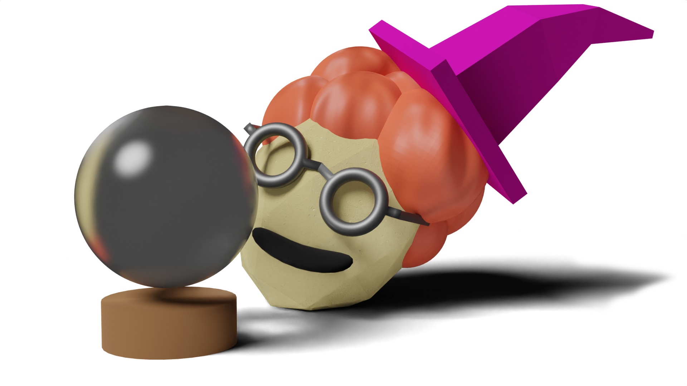
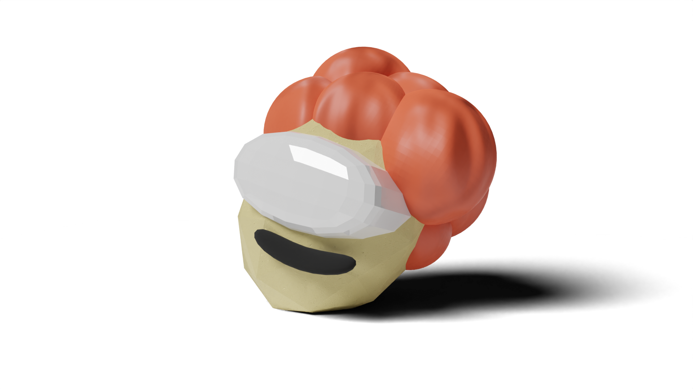
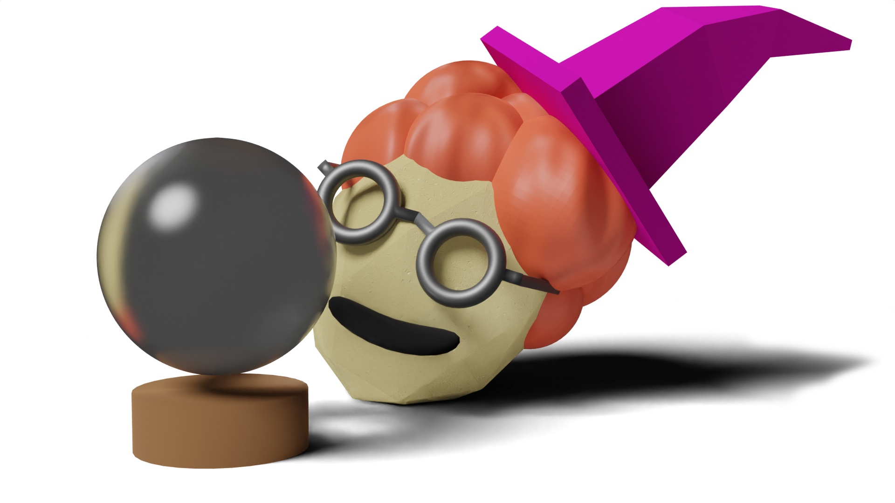

Nicholas Jennings

 







The following is a selection of my portfolio for UCSC computational media (technical focus). You can look at the rest of this website to see all other projects/research.

GROMIT is an at-runtime behvaior generation system for video games, made for my first-authored paper "What's the Game, then? Opportunities and Challenges for Runtime Behavior Generation" (Published at UIST'24, Best Paper).
When triggered by a user action, GROMIT generates new behaviors by writing c# code, which is compiled at runtime and incorperated
into the game. The first half of the Research Paper gives a technical overview of the system, and the paper's video figure (accessed through the 'Research Paper' link below) shows all 3 demos.
I built the majority of the system, except for the RAG memory system, some prompt engineering, and the traffic demo scene.
The libraries and assets used are listed on the github repo.
The repo is the open-source version of the project, so doesn't contain
some paid assets from the paper(e.g. the traffic scene) and is missing the OpenAI API keys. To run the project, download the repo, open it in Unity, go to
the desired scene (e.g. dungeon1) and paste your api key into the "Custom GPT" component of the managers gameobject. Watch the 'Repo Setup Video' below for more details.

GeneratiVR is a VR frontend to a Generative Design system that runs on Grasshopper (A generative design CAD enviroment). Users explore a set of shelf designs, and can
use several VR techniques to refine their search for shelves they like. They then select a set of shelves, which is returned to the Greasshopper system which generates a next interation of shelves.
I was a lead developer on all the UI tools for the system, and had a minor role in integrating the VR portion with Grasshopper.
I can't make the repository public, but I've included an apk for the VR portion of the system. If you have a Meta Quest headset you can install the apk using the Advanced Installer SideQuest App
Also linked are the two research papers that came out of the project. The first
is a Late-Breaking work that focuses on the system itself, and the second includes a study comparing the VR interface with a 2D version.
This project was a collection of VR interaction techniques used for a research project on VR signifiers.
In the study, participants were given the VR techniques in a series and asked to complete a task for each one. The performance of each
technique could then be compared.
I was the sole technical contributer to this project, although two of the interaction techniques (GoGo and Seven League Boots) are recreations of popular existing interation techniques, and the usability tests are based on similar tests in prior work.
The paper for this project is a work-in-progress, but the system and study are finished.
I can't make the repository public, but in the linked google drive you'll find
an APK file for each of the two task types, along with instructions on the controls for each task.

A short adventure game about the myth of Theseus and the Minotaur. It has procedural runtime maze generation, wall-walking, a full dialog system, and spooky vibes! Made for a breadth class on greek myths.
Play it on itch.io Video Walkthrough
The second half of the paper "What's the Game, then? Opportunities and Challenges for Runtime Behavior Generation", beginning in section 5, contains results of interviews with game developers about the system in the paper, and about Generative-AI based runtime generation in general.
Research Paper Research Paper Video Figure